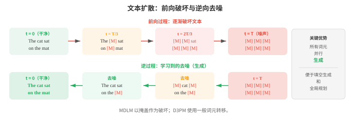
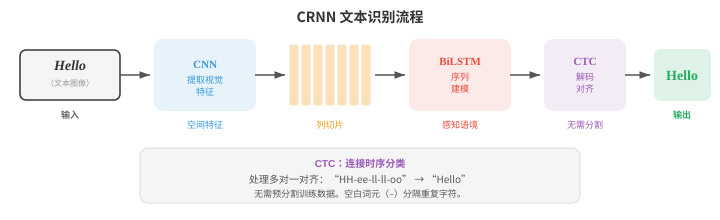
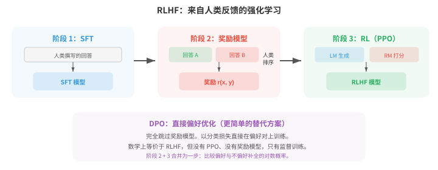
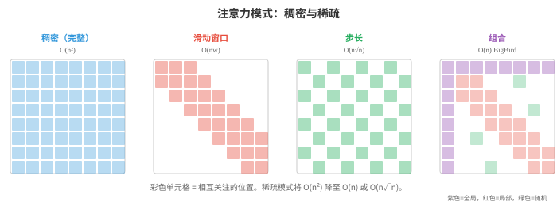
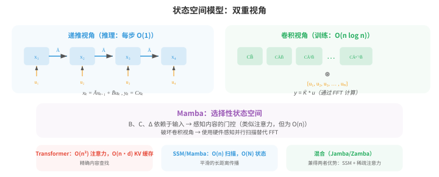
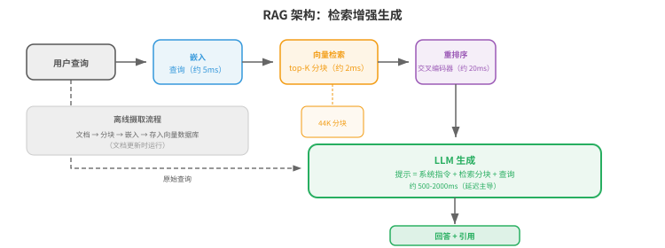
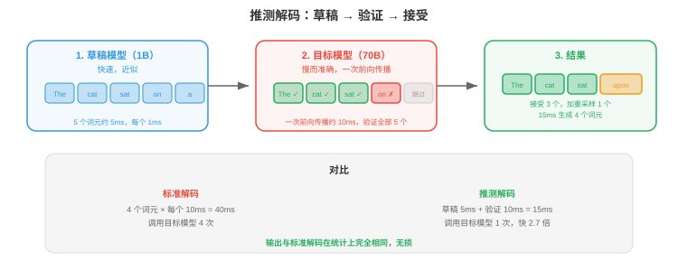
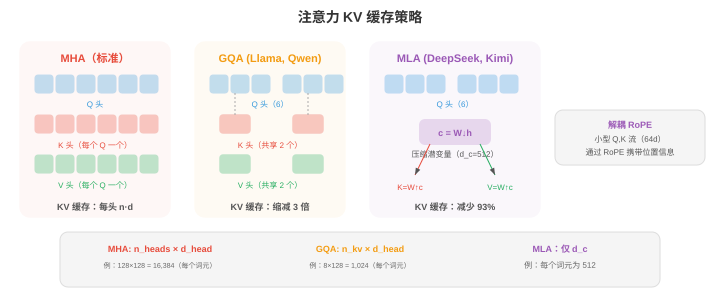

高级文本生成¶
高级文本生成超越了基础自回归解码，以提升质量、可控性和速度。本节介绍文本扩散模型（D3PM、MDLM）、OCR、用于对齐的 RLHF 与 DPO、长上下文方法（RoPE 缩放、环形注意力）、检索增强生成，以及加速推理的推测解码。
- 标准自回归生成（文件 04）从左到右、一次生成一个词元。它简单有效，但天然是顺序的，无法进行全局规划，且对输出的控制有限。本节介绍超越基础自回归解码的方法：用于文本的扩散模型、光学字符识别、通过人类反馈实现的可控生成、长上下文处理、检索增强生成，以及加速推理的推测解码。
大白话
普通生成像一次写一个词，稳但慢，也难先规划整篇；本节介绍让生成更全局、更可控或更快的办法。
- 文本扩散模型（text diffusion models）将扩散框架（第 08 章将为图像介绍）应用于离散文本。核心挑战在于文本是离散的：不能像给像素加噪声一样，对词元加入连续高斯噪声。若干方法解决了这一问题。
大白话
图像能加一点点连续噪声，词元却是一个个离散类别，所以文本扩散必须另想“怎么弄乱文字”。
- D3PM（Discrete Denoising Diffusion Probabilistic Models，Austin 等，2021）利用转移矩阵，直接在离散词元上定义前向破坏过程。在每个前向步骤中，一个词元有一定概率被替换为另一词元（均匀噪声）、被掩盖（吸收状态），或保持不变。逆过程学习去噪，即由被破坏的词元预测干净词元。转移矩阵 \(Q_t\) 在第 \(t\) 步控制破坏：
大白话
D3PM 每一步都按概率把词替换、遮住或保留，再训练另一个模型把这串被破坏的词还原。
- 其中，\(\text{Cat}\) 表示类别分布，\(x\) 是 one-hot 向量。多步前向过程 \(q(x_t \mid x_0)\) 有闭式：\(q(x_t \mid x_0) = \text{Cat}(x_t ; \, x_0 \bar{Q}_t)\)，其中 \(\bar{Q}_t = Q_1 Q_2 \cdots Q_t\) 是截至第 \(t\) 步所有转移矩阵的乘积。训练最小化按时间步分解的变分下界（ELBO），类似连续情形（第 08 章）：
大白话
转移矩阵把每一步的破坏规则记下来，多步连乘就能直接算出原词变成当前状态的概率。
- 第一项确保完全破坏后的分布与先验（均匀分布或全掩码）匹配。KL 项之和训练模型反转每个破坏步骤：真实逆后验 \(q(x_{t-1} \mid x_t, x_0)\) 可使用贝叶斯法则和已知转移矩阵以闭式计算，模型 \(p_\theta(x_{t-1} \mid x_t)\) 则被训练为与其匹配。
大白话
训练目标让模型一步步学会逆转破坏，而且最终完全弄乱时要符合预先设定的噪声分布。
- 由于两个分布都是类别分布，KL 散度只是对词表条目的简单求和。最后一项衡量从受破坏最轻的状态重建的质量。
大白话
因为每个词只是若干类别之一，KL 项可以直接逐词表相加；最后还要检查轻度损坏的文字能不能复原。
- MDLM（Masked Diffusion Language Models，Sahoo 等，2024）仅使用掩盖作为破坏操作，从而简化 D3PM：前向过程逐渐将词元替换为 [MASK] 词元，逆过程预测原始词元。这将文本扩散与掩码语言建模（BERT，文件 04）联系起来，扩散时间步决定有多少比例的词元被掩盖。在 \(t = 0\) 时，文本完全干净；在 \(t = T\) 时，文本完全被掩盖。
大白话
MDLM 只做“逐渐遮住、再逐渐填回”，可以看成把 BERT 的遮词训练扩展成多个破坏程度。
- 连续文本扩散（continuous text diffusion）通过在连续嵌入空间中工作来绕开离散问题。词元首先映射到嵌入向量（第 06 章），在此连续空间中添加噪声，去噪模型（通常是 Transformer）学习反转该过程。生成时，模型产生连续向量，再通过寻找最近嵌入将其映射回离散词元。挑战是连续空间中的微小错误可能映射到完全错误的词元，因此需要谨慎的取整和截断。
大白话
另一条路是先把词变成连续向量再加噪，最后把向量找回最近的词；小小的向量误差也可能选错整词。

- 文本扩散的吸引力在于，它通过迭代细化同时生成全部词元，而非从左到右生成。这允许全局连贯性和方便的填空生成（生成段落中间缺失的文本），但当前文本扩散模型在长文本生成质量上仍落后于自回归模型。
大白话
它可以同时修改整段文字，适合补中间缺口和全局润色；目前长文质量仍常不如逐词生成。
- 文本 OCR（Text OCR）（光学字符识别，Optical Character Recognition）是从图像中提取文本的任务。尽管传统上不归入文本生成，现代 OCR 系统已深度集成进自然语言处理，并且越来越多地使用语言模型组件。
大白话
OCR 是把图片里的字读出来，现代系统会用语言模型帮助判断模糊字符和上下文。
- 场景文本检测（scene text detection）在自然图像中定位文本区域（街道标志、产品标签、车牌）。这很有挑战性，因为真实世界中的文本有任意角度、尺度、字体，并处于杂乱背景中。检测方法通常使用 CNN 或 Transformer 骨干网络，在文本区域周围生成边界框或分割掩码。
大白话
先要在照片里找出文字在哪里，再谈读出内容；倾斜、遮挡和复杂背景会让这一步很难。
- CRNN（Convolutional Recurrent Neural Network，Shi 等，2017）是经典文本识别架构。CNN 从文本图像提取视觉特征，特征图被切成一列列的序列（每个水平位置一列），双向 LSTM 读取该序列以建模语境。输出使用CTC（Connectionist Temporal Classification）解码，它无需显式切分，即可处理输入列与输出字符之间的对齐。
大白话
CRNN 先用 CNN 看图像局部，再把从左到右的图像列交给 LSTM 读，CTC 负责对齐图像位置和字符。
- CTC 要解决的基本问题是：模型产生 \(T\) 个输出分布（每个输入列一个），而目标文本有 \(L \leq T\) 个字符。
大白话
图像列数通常比字符数多，而且不知道每列对应哪个字，CTC 就是为这个错位问题设计的。
- 我们不知道哪些列对应哪些字符。CTC 引入一个空白词元（blank token） \(\epsilon\)，并定义多对一映射 \(\mathcal{B}\)，将重复字符折叠并移除空白：\(\mathcal{B}(\text{"HH-ee-ll-ll-oo"}) = \text{"Hello"}\)（其中 “-” 表示空白）。
大白话
空白允许模型在字符之间停顿，同一字符连续出现时再折叠重复，最后得到正常拼写。
- 目标序列 \(y\) 的概率，是所有可折叠为 \(y\) 的输入对齐之和：
大白话
不必猜唯一对齐路径，把所有能合成目标文字的路径概率加起来，才是这个目标真正的概率。
- 其中，\(\pi\) 是长度为 \(T\) 的对齐路径（每列一个标签，包含空白）。直接对所有路径求和是指数复杂度，但前向算法（forward algorithm）（第 05 章 HMM）能用动态规划以 \(O(T \cdot L)\) 时间高效计算该和。
大白话
对齐路径数量会爆炸，前向动态规划把重复子问题复用掉，才能在可接受时间内求和。
- 空白词元不可或缺：没有它，像 “Hello” 中的重复字符 “ll” 会与单个 “l” 无法区分。训练时最大化 \(\log P(y \mid x)\)；推理时通过束搜索或对 CTC 输出进行贪心解码找到最佳路径。
大白话
blank 让“一个 l”与“连续两个 l”区分开；训练提高正确文字概率，预测时再选最好的路径。
- 文档 OCR（document OCR）处理结构化文档（发票、表单、科学论文），除识别字符外还必须理解布局。LayoutLM 等现代系统将文本识别与空间位置特征结合：每个词元既有文本嵌入，也有编码页面 \((x, y)\) 坐标的位置嵌入。这使模型理解出现在 “Total:” 下方的数字就是总金额。
大白话
文档 OCR 不只读字，还要知道字在页面哪里；“Total”下面的数字和边角数字含义不同。

- TrOCR 等视觉语言 OCR（vision-language OCR）模型将文本识别视为图像到文本生成：Vision Transformer 编码器处理图像，语言模型解码器逐字符生成文本。它利用预训练视觉和语言模型的能力，无需手工特征工程即可处理多样的文字系统、字体和布局。
大白话
视觉语言 OCR 直接把读图当成生成文字，利用预训练模型减少手工设计规则。
- 可控生成（controllable generation）的挑战，是引导语言模型产生具备所需属性的输出：特定风格、主题、情感、安全等级或事实准确性。模型应在保持流畅与连贯的同时遵循指令。
大白话
可控生成要求模型既写得自然，又符合指定风格、主题或安全边界，不能只会“说得像”。
- 文本的无分类器引导（classifier-free guidance, CFG）改编自图像生成技术。训练时，条件信号（例如提示）会有一定概率随机丢弃，因此用同一模型同时训练条件模型和无条件模型。推理时，对输出 logits 作插值：
大白话
公式把有条件预测和无条件预测做加权差分，突出提示真正带来的方向。
- 其中 \(w > 0\) 会放大条件的影响。更高的 \(w\) 使输出更强地遵循提示，却会降低多样性。
大白话
CFG 用“有提示”和“没提示”两种预测的差值强化条件；力度越大越听话，但越容易写得单调。
- RLHF（Reinforcement Learning from Human Feedback，Ouyang 等，2022）是让语言模型与人类偏好对齐的主导方法。该过程分三阶段：
大白话
RLHF 把“人类更喜欢哪种回答”变成训练信号，让模型从只会预测文字走向更符合使用者期望。
- 第一，监督微调（supervised fine-tuning, SFT）：在由人类为提示撰写的高质量回答数据集上微调基础语言模型。
大白话
第一步先用人工示范教模型基本的回答格式和行为。
- 第二，奖励模型训练（reward model training）：收集人类比较（给定提示 \(x\) 和两个回答 \(y_1, y_2\)，哪个更好？），训练奖励模型 \(r_\phi(x, y)\) 预测人类偏好。奖励模型采用成对排序损失训练：
大白话
这个损失让偏好回答的奖励高于不偏好回答，差距越大，排序越符合人工选择。
- 其中 \(y_w\) 是偏好的回答，\(y_l\) 是不偏好的回答。
大白话
第二步让人类比较两份答案，再训练一个“偏好评分器”去模仿这些选择；\(y_w\) 是赢的答案，\(y_l\) 是输的答案。
- 第三，强化学习微调（RL fine-tuning）：优化语言模型以最大化奖励，同时保持接近 SFT 模型（防止模式坍缩）。这使用 PPO（Proximal Policy Optimisation，第 06 章）及 KL 惩罚：
大白话
这个目标一边奖励更符合偏好的回答，一边惩罚模型离 SFT 版本偏得太远。
- KL 项防止模型偏离基础模型过远，或利用奖励模型的缺陷（“奖励黑客 reward hacking”）。
大白话
第三步让模型追求奖励，但用 KL 惩罚拴住它，避免为了高分变得极端或钻评分器漏洞。

- DPO（Direct Preference Optimisation，Rafailov 等，2023）通过完全移除奖励模型来简化 RLHF。核心数学洞见是：上述带 KL 约束的 RL 目标存在闭式最优策略：
大白话
DPO 发现可以把奖励模型和 PPO 的过程合并掉，直接用偏好答案训练当前模型相对参考模型的概率。
- 其中 \(Z(x)\) 是归一化配分函数。将此式对奖励重排可得 \(r(x, y) = \beta \log \frac{\pi^\ast(y \mid x)}{\pi_{\text{ref}}(y \mid x)} + \beta \log Z(x)\)。把该隐式奖励代入 Bradley-Terry 偏好模型 \(P(y_w \succ y_l) = \sigma(r(x, y_w) - r(x, y_l))\) 后，难以处理的 \(Z(x)\) 项相消，直接得到 DPO 损失：
大白话
DPO 损失直接比较当前模型相对参考模型对赢、输答案的概率提升。
- 这在数学上等价于 RLHF，却将奖励模型和强化学习训练折叠成单个监督步骤。
大白话
DPO 仍在优化同一类偏好目标，但工程上只需一套直接的监督训练流程。
- sigmoid 内部的表达式可理解为：“相对于参考模型，提高偏好回答的相对概率，降低不偏好回答的相对概率。”
大白话
直观上就是让赢的答案相对更可能，让输的答案相对更不可能。
- 参数 \(\beta\) 控制策略可以偏离参考模型的程度。实践中，DPO 更易实现（只需计算当前模型和参考模型对两个补全的对数概率），并避免 PPO 训练的不稳定性。
大白话
\(\beta\) 决定偏好信号有多强，在“跟随参考模型”和“追求偏好”之间调节。
- 宪法 AI（Constitutional AI）（Bai 等，2022）自动化了部分对齐过程。它不收集人类比较，而是让语言模型根据一组原则（“宪法”）批评并修订自己的输出，例如“选择危害更小的回答”。随后，这些 AI 生成的比较被用于偏好训练（RLAIF：来自 AI 反馈的强化学习）。
大白话
宪法 AI 先写原则，再让模型按原则自评和改写，减少每条比较都依赖人工的成本。
- 长上下文方法（long-context methods）解决标准自注意力的 \(O(n^2)\) 内存和计算成本，这一成本限制了序列长度。当 \(n\) 增长到数万或数十万词元时，标准注意力变得不可行。
大白话
注意力要比较每一对词，文本一长，比较次数按平方增长；长上下文方法就是想把这笔成本降下来。
- 稀疏注意力（sparse attention）以稀疏模式替换稠密的 \(n \times n\) 注意力矩阵，让每个词元只关注其他词元的一个子集。常见模式包括局部注意力（local attention）（每个词元关注固定大小的邻居窗口）、步长注意力（strided attention）（每隔 \(k\) 个词元关注一个）和随机注意力（random attention）（关注随机子集）。这些模式的组合（BigBird、Longformer 使用）在保持捕捉局部和全局依赖能力的同时，实现 \(O(n)\) 或 \(O(n \sqrt{n})\) 复杂度。

大白话
稀疏注意力不让每个词看所有词，而是按规则挑邻居、远点或随机位置，少算很多配对。
- 滑动窗口注意力（sliding window attention）限制每个词元只关注前面 \(w\) 个词元（其局部窗口）。其复杂度是 \(O(nw)\) 而非 \(O(n^2)\)，但长距离信息必须经由层间重叠窗口传播。对于 \(L\) 层和窗口大小 \(w\)，有效感受野是 \(L \times w\) 个词元。
大白话
滑窗只看附近词，计算便宜；远处信息要像接力一样通过多层窗口逐步传过来。
- 环形注意力（ring attention）将长序列分发到多个设备，构成环形拓扑。每个设备持有一个序列块，为该块计算注意力，同时将键值块发送给环中下一个设备。这让计算与通信重叠，并允许任意长度的序列，限制仅来自所有设备的总内存，而非任一单设备的内存。
大白话
把长文章切成多块分给多张卡，卡之间轮流交换键值，于是单卡不用独自装下整篇文章。
- 记忆增强模型（memory-augmented models）通过为 Transformer 配备外部记忆库来扩展上下文。在每层中，模型可以使用注意力从该记忆读取并向其写入。Memorizing Transformers 缓存先前块的键值对，并在后续块中关注它们，从而将上下文有效扩展到训练窗口之外。为保持高效，检索采用近似方法（在缓存键上作 \(k\) 近邻）。
大白话
模型把旧片段存进外部记忆，需要时再检索，不必把所有历史一直塞在当前窗口里。
- 上述方法是长上下文的架构（architectural）解决方案。模型如何被训练（trained）以有效使用长上下文，同样重要。
大白话
有能装长文本的结构还不够，训练数据也要教模型真的去使用远处信息。
- 渐进式上下文扩展（progressive context extension）是标准方法。从一开始便在超长序列上训练代价极高（\(O(n^2)\) 注意力成本），因此模型通常先在较短上下文长度（一般为 4K–8K 词元）预训练，再通过继续预训练（continued pre-training）分阶段扩展到目标长度。
大白话
先用短窗口把语言能力学好，再逐步拉长窗口，成本比一开始就训练超长文本低。
- Llama 3.1 用逐渐增加的序列长度，在 800B 词元上从 8K 扩展到 128K。DeepSeek-V3 先在 4K 训练，之后扩展至 32K，再到 128K。
大白话
这些例子说明长上下文通常是分阶段扩展，不是一次把长度从几千跳到十几万。
- 每个阶段只使用适量词元（相对完整预训练预算而言），因为模型只需学习如何使用更长的位置，而不是重新学习语言本身。
大白话
扩展阶段主要练“如何读远处”，不必把通用语言知识完整重学一遍。
- 扩展时必须调整位置编码。RoPE 插值（RoPE interpolation）缩小位置索引，使模型看到训练时见过的相同旋转角度，只是将其铺展到更长序列。若模型以长度 \(L\) 训练，而希望扩展到 \(L' = 4L\)，则将所有位置索引除以 4。
大白话
RoPE 插值把更长序列的座位压回模型熟悉的角度范围，相当于把原来的标尺拉长使用。
- 这意味着模型永远不会看到未遇到过的旋转角度，但相邻位置间的有效分辨率会降低。
大白话
代价是位置之间被压得更近，模型分辨相邻词的精细程度可能下降。
- RoPE 外推（RoPE extrapolation）保持原始位置索引不变，直接将 RoPE 应用于超过 \(L\) 的位置，依赖模型泛化到未见角度。
大白话
外推不压缩座位号，直接赌模型能理解训练时从没见过的新角度，通常风险更大。
- 插值稳定得多；没有基频调整（Adjusted Base Frequency, ABF）时，外推会快速退化。
大白话
实践中插值往往比裸外推可靠；不调整基频，超出训练长度后效果很容易崩。
- YaRN（Yet another RoPE extensioN）通过认识到不同 RoPE 维度不应同等对待，改进了朴素插值。
大白话
YaRN 不把所有位置维度一刀切，而是根据它们转得快慢分别处理。
- 较小的 \(i\) 所对应的高频维度（\(\theta_i = \theta_{\text{base}}^{-2i/d}\)）在训练长度内旋转很多次，可以良好外推。
大白话
高频维度变化快，训练中已经经历很多轮旋转，所以通常更能承受外推。
- 低频维度（较大的 \(i\)）旋转较慢，对长度扩展更敏感。
大白话
低频维度变化慢，原本见过的范围少，长度变长时反而更容易失准。
- YaRN 仅插值低频维度，对高频维度外推，并向注意力 logits 施加温度缩放 \(t\)，以补偿分布偏移：
大白话
YaRN 对不同频率采用不同策略，再用温度把注意力分布调平，减少位置压缩带来的偏置。
- 其中 \(t > 1\) 会拉平注意力分布，防止在位置讯号被压缩时，模型过于尖锐地关注附近词元。
大白话
温度大于 1 会让模型别只盯着少数近邻，给较远位置保留一些注意力机会。
- 长上下文数据整理（long-context data curation）是关键且常被低估的挑战。大多数预训练语料由短文档构成（新闻文章、网页、社交媒体帖子）。
大白话
想让模型学会读长文，训练集就不能只由一堆短帖子组成，数据本身必须包含长距离关系。
- 长上下文训练需要真正用到完整上下文窗口的数据混合：图书、代码库、长篇科学文章、多轮对话日志和按主题相关性拼接的文档。
大白话
书籍、代码库和长对话等材料能逼模型使用窗口里相距很远的信息。
- 若模型仅用短文档训练，再将其填充或打包以填满上下文窗口，它会学会忽略远处词元，因为远处词元从不相关。
大白话
只是拿很多短文硬拼长，并不会教会模型长程理解，反而会让它觉得远处内容通常是噪声。
- 序列打包（sequence packing）是一种训练效率技术：将多篇文档拼接为一个训练序列以避免填充浪费，同时用注意力掩码阻止跨文档注意力。
大白话
打包可以省掉 padding 的空位置，但必须用掩码隔开文档，不能让一篇文章偷看下一篇。
- 对长上下文训练，打包策略很重要：打包大量无关短文档会教会模型远处词元是噪声；打包较少、真正长的文档则会教会它使用完整上下文。
大白话
同样是填满窗口，装很多无关短文和装一篇真正长文，训练出来的阅读习惯完全不同。
- 一个已知失效模式是“迷失在中间”（lost in the middle）现象（Liu 等，2023）：语言模型通常能有效使用上下文窗口开头与末尾的信息，却难以使用放在中间的信息。
大白话
长文模型常记得开头和结尾，却漏掉中间内容，这就是“迷失在中间”。
- 这类似人类记忆中的序列位置效应（首因与近因）。
大白话
人也常对最先听到和刚听到的内容印象更深，模型的偏好有点像这种首尾效应。
- 它部分来自训练数据分布（重要信息常位于文档开头或结尾），也部分来自注意力模式集中在临近词元和初始词元。将关键信息多样化放置进行长上下文训练，可缓解但不能完全解决该问题。
大白话
如果训练资料总把重点放在首尾，模型自然会学成这样；把重点随机放在不同位置能缓解偏差。
- 大海捞针（needle-in-a-haystack）评估测试模型能否从长而干扰性的上下文（“干草堆”）中，检索被放在不同位置的特定事实（“针”）。
大白话
给模型一篇很长的干扰文本，再藏一个事实，观察它能否从任意位置把这根“针”找出来。
- 具备真正长上下文能力的模型，无论针位于哪里都应达到近乎完美的检索。
大白话
真正会读长文的模型不该只在开头找得到，针放在哪都应表现稳定。
- 这一测试清楚地揭示迷失在中间效应，常用于评测上下文扩展方法。
大白话
这个测试能把“窗口标得很长”和“真的用得好”区分开。
- 预训练后的长上下文微调（long-context fine-tuning）使用有针对性的 SFT 数据：长多轮对话、证据散落于数千词元的文档问答、长文本摘要和仓库级代码理解。
大白话
长上下文微调要用真正需要跨段寻找证据的任务，不能只把短问答塞进大窗口。
- Qwen3 在此阶段使用双块注意力（Dual Chunk Attention, DCA），将长序列作为成对块处理：块内注意力完整，块间注意力高效，在微调时实现 4 倍的有效序列容量。
大白话
DCA 在块内精细看，在块间用更省算的方式沟通，从而用同样资源处理更长序列。
- 状态空间模型（State Space Models, SSMs）为长序列建模提供根本不同的方案。它不修改注意力，而是完全用受连续时间控制理论启发的线性动力系统取代注意力。
大白话
SSM 不做两两注意力，而是维护一个随输入更新的连续状态，用动力系统记住历史。
- 一个 SSM 将输入序列 \(u(t)\) 映射为输出 \(y(t)\)，这一映射通过由以下方程控制的潜在状态 \(x(t) \in \mathbb{R}^N\) 实现：
大白话
这个方程说：旧状态如何变化、当前输入怎样写入状态，以及状态怎样读成输出，都由矩阵控制。
- 其中，\(A \in \mathbb{R}^{N \times N}\) 是状态转移矩阵，\(B \in \mathbb{R}^{N \times 1}\) 是输入投影，\(C \in \mathbb{R}^{1 \times N}\) 是输出投影，\(D\) 是跳跃连接。
大白话
\(A\) 管记忆，\(B\) 管输入进入，\(C\) 管状态读出，\(D\) 是输入到输出的直通支路。
- 要将其用于离散序列（词元），连续系统要用步长 \(\Delta\) 离散化（discretised）。零阶保持离散化给出：
大白话
文字是一格一格的词元，必须先把连续时间方程换成按步更新的离散版本。
- 随后的离散递推为 \(x_k = \bar{A} x_{k-1} + \bar{B} u_k\)、\(y_k = C x_k + D u_k\)，形式上类似 RNN：每次处理一个词元并维护隐藏状态。
大白话
离散后每读一个词就更新状态并输出，表面上和 RNN 相似，但内部的记忆结构不同。
- 与 RNN 不同，该递推也可展开为全局卷积（global convolution）：因为系统是线性的，输出为 \(y = \bar{K} \ast u\)，其中卷积核 \(\bar{K} = (C\bar{B}, \, C\bar{A}\bar{B}, \, C\bar{A}^2\bar{B}, \ldots)\) 只依赖固定参数。
大白话
线性递推可以改写成一次卷积：同一套卷积核作用于整段输入，方便并行训练。
- 这种双重视角（dual view），即用于高效自回归推理的递推（每步 \(O(1)\)）与用于高效并行训练的卷积（通过 FFT 达到 \(O(n \log n)\)），是 SSM 的核心洞见。

大白话
SSM 推理时按状态一步步走，训练时改用卷积并行算；同一个模型因此兼顾两种场景。
- S4（Structured State Spaces for Sequence Modeling，Gu 等，2022）通过解决关键数值挑战使 SSM 变得实用：状态矩阵 \(A\) 必须捕捉长距离依赖，但朴素参数化会导致状态衰减或爆炸（与普通 RNN 的同一问题）。
大白话
S4 重点解决“记忆太快消失或数值爆炸”的稳定性问题，让 SSM 真能记住远处信息。
- S4 使用 HiPPO（High-order Polynomial Projection Operators）矩阵初始化 \(A\)。该矩阵来自连续信号最优多项式逼近理论。HiPPO 矩阵具有特定结构，可证明状态能够维持整个输入历史的压缩表示，并平稳衰减：
大白话
HiPPO 用有理论保证的多项式摘要历史，三角结构帮助状态逐步压缩输入而不乱掉。
- 这一下三角结构确保状态充当使用 Legendre 多项式进行的在线输入信号近似。为长卷积核计算 \(\bar{A}^k\) 很昂贵，因此 S4 利用 HiPPO 矩阵可被分解为低秩项与对角项之和，实现 \(O(n \log n)\) 的卷积核计算。
大白话
直接算很长的卷积核太贵，S4 利用矩阵结构把它拆开，才能保持较低复杂度。
- Mamba（Gu 和 Dao，2023）引入关键创新，即选择性状态空间（selective state spaces）：令 SSM 参数依赖于输入。在 S4 中，矩阵 \(A\)、\(B\)、\(C\) 和步长 \(\Delta\) 是固定的，无论词元内容如何，使用的动态过程都相同。Mamba 让 \(B\)、\(C\) 和 \(\Delta\) 成为输入的函数：
大白话
S4 对每个词使用同一种记忆规则，Mamba 让规则随词内容变化，模型可以决定什么值得记住。
- 这种选择性让模型在每个位置决定将什么信息存入状态、忽略什么信息，类似注意力选择相关词元，却没有二次成本。步长 \(\Delta_k\) 控制“门”：较大的 \(\Delta\) 使状态强烈整合当前输入（连续动力过程前进很大一步，实质上重置状态）；较小的 \(\Delta\) 保留既有状态并忽略当前输入。
大白话
选择性状态像一个会开关的记事本：重要词写进去，不重要词少影响旧记忆，而且不需要注意力的平方计算。
- 代价是，输入依赖的参数会破坏卷积视角（卷积核不再固定），因此 Mamba 不能使用基于 FFT 的训练。相反，它使用硬件感知并行扫描（hardware-aware parallel scan）算法，利用递推的结合性：状态更新 \((x_k, u_k) \mapsto x_{k+1}\) 可表达为一系列结合操作，并借助前缀和（scan）并行化，类似硬件设计中的并行前缀加法。这可在 GPU 上以 \(O(n)\) 时间和 \(O(\log n)\) 深度运行，效率接近卷积。
大白话
规则随输入变化后不能再用固定卷积，只能把递推重新组织成并行扫描，在 GPU 上仍保持线性效率。
- Mamba 在每个词元上的推理真正达到 \(O(1)\)（只更新固定大小的状态，不使用随上下文增长的 KV 缓存），因此在长序列上内存效率从根本上优于 Transformer。状态大小 \(N\)（通常为 16）远小于 Transformer 的 KV 缓存，后者存储 \(O(n \cdot d)\) 个值。实践中，在语言建模基准上，Mamba 以相同参数量达到或超过 Transformer 的质量，并在长序列上显著加快推理。
大白话
Mamba 只保存固定大小的状态，文本越长也不需要不断堆 KV 缓存，因此长序列推理更省内存。
- 混合架构（hybrid architectures）将 SSM 层与注意力层结合：多数层使用 SSM（高效的长距离传播），夹杂少数注意力层（精确的基于内容检索）。Jamba、Zamba 等模型交替使用 Mamba 与 Transformer 块，在保持多数推理效率优势的同时获得比纯 SSM 更好的质量。这表明注意力和 SSM 捕捉互补能力：SSM 擅长平滑、长距离的状态传播，注意力擅长精确、依赖内容的查找。
大白话
混合模型让 SSM 负责便宜地传远距离状态，注意力负责精确查某个内容，各取所长。
- 检索增强生成（Retrieval-Augmented Generation, RAG）通过让语言模型在推理时访问外部知识库，解决其知识局限。RAG 不再只依赖训练期间编码在模型参数中的知识，而是检索相关文档，并以这些文档为条件生成。
大白话
RAG 像给模型配一个可更新的资料柜：先查资料，再根据查到的内容回答，不必把所有知识都烙在参数里。
- 经典的检索器-阅读器架构（retriever-reader architecture）有两个组成部分。检索器（retriever）接受查询，并从语料中获取最相关的 top-\(k\) 段落。阅读器（reader）（一个语言模型）以查询和检索段落为条件生成答案。检索器可以使用稀疏方法（BM25，它扩展了文件 02 的 TF-IDF）或稠密方法。
大白话
检索器负责找资料，阅读器负责读资料并组织答案；找错资料时，后面写得再流畅也可能错。
- 稠密段落检索（Dense passage retrieval, DPR）采用双编码器架构：一个编码器将问题映射为向量，另一个编码器将段落映射为向量。二者通常基于 BERT。建立索引时，所有段落都会被编码并存储；查询时，问题被编码，再通过近似最近邻搜索（如 FAISS）找到最近段落。相似度度量是问题向量与段落向量的点积。
大白话
DPR 把问题和段落都变成向量，向量越接近就越可能相关，再用近邻索引快速找候选。
- 分块策略（chunking strategies）显著影响检索质量。文档必须被切成足够小、可由检索器处理的段落，但也应足够大以包含完整想法。固定大小分块（例如 256 个词元、50 个词元重叠）很简单，却可能不自然地切断句子。语义分块在段落或章节边界切分；层级分块则在不同粒度上创建摘要树。
大白话
分块是在“太大难检索”和“太小缺上下文”之间取平衡；切法会直接影响答案能否找到完整证据。

- RAG 有几个优势：无需重新训练模型即可更新知识库，模型可以引用来源，且因为能将答案扎根于检索文本，幻觉会减少。主要挑战是检索质量（若检索到错误段落，模型可能会自信地产生错误答案）和延迟（检索为推理增加一个步骤）。
大白话
RAG 的优势是知识可更新、能给出处；风险是检索错会把错误放大，而且每次回答多了一次检索等待。
- 推测解码（speculative decoding）使用小而快的草稿模型（draft model）并行提议多个词元，再由大目标模型（target model）在一次前向传播中验证，以加速自回归生成。
大白话
让小模型先打草稿，大模型一次检查一串，而不是大模型逐词慢慢写，正确结果仍由大模型把关。
- 算法过程如下：草稿模型自回归地产生 \(k\) 个候选词元（它很小，因此很快）。
大白话
第一步是小模型连续提出一小段候选，候选越靠谱，后面能一次接受的词越多。
- 接着，目标模型在一次前向传播中同时对这 \(k\) 个词元打分（这很高效，因为计算是批处理的）。
大白话
第二步让大模型批量检查整段草稿，利用并行计算省掉多次启动大模型的开销。
- 对于每个候选词元 \(t\)，若它从草稿分布 \(p_d(t)\) 采样，则以概率 \(\min(1, \, p_{\text{target}}(t) / p_d(t))\) 接受它。若被拒绝，则从调整后分布（adjusted distribution） \(p_{\text{adj}}(t) = \max(0, \, p_{\text{target}}(t) - p_d(t))\)（归一化后）重新采样一个修正词元。
大白话
草稿词越符合大模型分布，越容易被接受；不符合就拒绝并按大模型与草稿的差额重新抽一个。
- 这种接受-拒绝方案保证输出分布与单独使用目标模型完全一致。
大白话
这套概率校正的关键是：加速只改变计算路径，不改变最终生成分布。
- 要理解原因，考虑产生词元 \(t\) 的有效概率。它可能被直接接受（概率为 \(p_d(t) \cdot \min(1, p_{\text{target}}(t)/p_d(t))\)），也可能由重新采样产生。
大白话
一个词最终出现有两条路：草稿直接被验收，或草稿被拒后由修正分布补回来。
- 对于 \(p_{\text{target}}(t) \leq p_d(t)\) 的词元，直接接受贡献 \(p_{\text{target}}(t)\)。对于 \(p_{\text{target}}(t) > p_d(t)\) 的词元，直接接受贡献 \(p_d(t)\)，重新采样贡献剩余的 \(p_{\text{target}}(t) - p_d(t)\)（考虑拒绝概率后）。
大白话
草稿给得太多时只保留目标模型认可的部分，给得太少时用差额补足目标模型缺的概率。
- 两种情况下，最终产生 \(t\) 的总概率都是 \(p_{\text{target}}(t)\)。草稿模型只影响速度，不影响质量。
大白话
两条路径加起来正好恢复目标模型的概率，所以小模型只是加速器，不是质量标准。

- 加速幅度取决于接受率：若草稿模型与目标模型对齐良好，大多数词元会被接受，墙钟时间大致接近草稿模型。典型加速为 2-3 倍，且质量不退化。
大白话
草稿和目标越像，接受率越高、加速越明显；如果草稿经常错，验证成本就抵消收益。
- Medusa（Cai 等，2024）采用不同方法：它不使用独立草稿模型，而是在目标模型本身上添加多个轻量预测头。每个头同时预测不同的未来词元位置（向前 \(k = 1, 2, 3, \ldots\) 步）。每一步中，Medusa 使用树结构提出若干候选续写，目标模型注意力层的一次前向传播便可验证哪些候选一致。这完全避免了独立草稿模型。
大白话
Medusa 把多个小预测头直接装进目标模型，让它同时猜几个未来位置，再一次性验收。
- 更广义的并行生成（parallel generation）方法旨在打破自回归解码的顺序瓶颈。Jacobi 解码初始化所有位置的猜测，并行迭代细化直到收敛，将生成视为不动点迭代。非自回归模型（NAT）在一次前向传播中同时生成全部词元，但通常质量退化，需要迭代细化、CTC 损失或从自回归教师模型进行知识蒸馏等技术来弥补差距。
大白话
并行生成先同时猜很多位置，再反复修正；速度快，但一次猜完整句通常比逐词生成更难保证质量。
- 上述对齐、长上下文、检索、高效解码、状态空间模型等技术，在现代生产级 LLM 中汇聚。
大白话
生产模型往往不是单一技巧，而是把对齐、长文、检索和加速等部件组合起来。
- 本节其余部分将梳理前沿模型中的架构创新，展示文件 01–04 的理论思想与上述方法在实践中如何组合。
大白话
后面的例子把前面学过的理论放进真实模型设计里，帮助理解各个技术如何协同。
- 分组查询注意力（Grouped Query Attention, GQA）是最广泛采用的注意力效率技术。标准多头注意力（MHA）为每个头维护独立的键和值投影，因此每个词元需要缓存 \(n_{\text{heads}} \times d_{\text{head}}\) 个值。GQA 将多个查询头分组，共享一个键值头。
大白话
GQA 让多个查询头共用键和值，保留不同查询角度，同时减少推理时需要缓存的内容。
- 使用 64 个查询头和 8 个 KV 头（Llama 3、Qwen、Gemma 常见配置）时，每个 KV 头由 8 个查询头共享，相比 MHA 将 KV 缓存减少 8 倍。
大白话
64 个查询头只配 8 个 KV 头时，缓存量约变成原来的八分之一。
- 输出质量与 MHA 几乎相同，因为查询仍能关注不同模式，只是共享同一个键值子空间。多查询注意力（MQA）是所有查询头共用一个 KV 头的极端情形，但 GQA 提供了更好的质量-效率权衡。
大白话
GQA 主要省缓存而不明显牺牲质量；MQA 更省，但所有查询头共用一个 KV 头，限制更强。
- DeepSeek-V2 引入的多头潜在注意力（Multi-head Latent Attention, MLA）实现了更激进的 KV 缓存压缩。它不缓存完整键值投影（即使使用 GQA），而是将隐藏状态下投影为低秩潜在向量（latent vector） \(c_t \in \mathbb{R}^{d_c}\)，其中 \(d_c \ll n_{\text{heads}} \times d_{\text{head}}\)：
大白话
MLA 先把键值压成小潜在向量存起来，用时再还原；缓存更小，但需要额外的投影计算。
- 只有这个压缩向量被缓存。注意力计算时，通过上投影重建完整键和值表示：\(k_t = W_{\text{up}}^K c_t\)、\(v_t = W_{\text{up}}^V c_t\)。在 DeepSeek-V3（总计 671B 参数，37B 活跃参数）中，压缩维度为 \(d_c = 512\)，而完整 MHA 为 \(128 \times 128 = 16{,}384\)，KV 缓存减少 93%。
大白话
这个例子说明低秩缓存能把每个词需要保存的数值大幅压缩，长对话时节省显存尤其明显。
- 一个细节是：标准 RoPE 依赖位置，与共享压缩不兼容，因此 MLA 使用解耦 RoPE（decoupled RoPE）：查询和键的小型独立流（每头 64 维）通过 RoPE 承载位置信息，而大部分表示流经压缩潜在路径。
大白话
MLA 把位置旋转信息单独走一条小通道，避免它和共享的压缩表示互相冲突。

- 大规模位置编码（position encoding at scale）已与原始正弦方案显著分化。所有前沿模型都使用 RoPE（文件 04），但针对长上下文作了关键修改。基频 \(\theta_{\text{base}}\) 在原始 RoPE 公式 \(\theta_i = \theta_{\text{base}}^{-2i/d}\) 中通常为 10,000，这限制了训练长度之外的外推。
大白话
现代模型仍常用 RoPE，但会专门调位置频率，否则超出训练长度后位置表示容易失真。
- 调整基频（Adjusted Base Frequency, ABF）只是将 \(\theta_{\text{base}}\) 增加到 500,000（Llama 3）或 1,000,000（Qwen3、Gemma 3），延长旋转周期，使模型在训练期间遇到更少完整旋转并可进一步外推。
大白话
把基频调大相当于让位置旋转慢一点，给模型留下更长的可外推范围。
- YaRN（Yet another RoPE extensioN）采用频率相关插值：低频维度被插值（缩小），高频维度被外推，并用温度因子调整注意力分布。DeepSeek-V3、Qwen 和 Kimi K2 都采用基于 YaRN 的扩展，从在 4K–8K 上预训练的模型达到 128K 上下文。
大白话
YaRN 让不同频率的维度采用不同的拉伸策略，再调整注意力温度，以把短上下文模型扩到更长。
- Llama 4 引入的iRoPE（interleaved RoPE，交错 RoPE）采用了更激进方法：每隔 4 个注意力层，就有一层完全不使用位置编码（NoPE），其他层则使用带分块注意力的标准 RoPE。
大白话
iRoPE 让大多数层保留位置顺序，间隔插入一层完全不带位置偏置的注意力，尝试兼顾位置和超长范围。
- NoPE 层可不带任何位置偏差地关注全部位置，RoPE 层提供局部顺序。再结合推理时的温度缩放，这使 Llama 4 Scout 达到 1000 万词元的上下文窗口，远超任何纯 RoPE 方法。
大白话
NoPE 层负责全局查看，RoPE 层负责顺序感；两者组合能把上下文窗口推得很长。
- 大规模专家混合（Mixture of Experts at scale）已成为前沿模型的主导架构（文件 04 介绍了 MoE 基础）。关键设计选择包括专家数量、路由稀疏性和负载均衡。
大白话
大模型常用很多专家但每次只激活少数，设计重点变成专家怎么分、怎么路由、怎么避免忙闲不均。
- 路由稀疏性（routing sparsity）差异很大：DeepSeek-V3 使用 256 位专家与 top-8 路由（32 倍稀疏），Qwen3 使用 128 位专家与 top-8（16 倍稀疏），Mixtral 使用 8 位专家与 top-2（4 倍稀疏），Llama 4 Maverick 使用 128 位专家、top-1 加共享专家（128 倍稀疏）。
大白话
稀疏倍数越大，模型总容量相对活跃计算越大，但路由和通信也更难安排。
- 更高稀疏性意味着在相同活跃计算量下有更多总参数，但需要更谨慎的负载均衡和通信基础设施。
大白话
少量计算换大容量听起来划算，前提是各专家别挤在一起，设备之间传数据也要跟得上。
- 无辅助损失的负载均衡（auxiliary-loss-free load balancing）（DeepSeek-V3）替代了传统负载均衡损失（文件 04），后者被发现会降低模型质量。每位专家改为维护按训练步骤调整的动态偏置项：过载专家的偏置被降低（接收更少词元），负载不足专家的偏置被提高。这样无需辅助损失污染主训练信号，也能实现平衡路由。
大白话
不再给主目标额外加平衡损失，而是直接调每个专家的路由偏置，让过忙的少接、闲置的多接。
- 大多数 MoE 设计中都有共享专家（shared experts）：无论路由结果如何，都处理每个词元的一个或多个专家 FFN。这些专家处理所有词元需要的通用模式（基本句法、功能词），让路由专家得以专门化。Llama 4 对每个词元使用 1 位共享专家与 1 位路由专家（高度稀疏）；DeepSeek-V3 使用 1 位共享专家与 8 位路由专家。
大白话
共享专家负责人人都要用的基础能力，路由专家则可以专攻某些类型的词或任务。
- 交替稠密层与 MoE 层（alternating dense and MoE layers）是另一设计维度。Gemma 2 和 3 交替使用局部/全局注意力层（Gemma 3 的比例为 5:1：局部层使用 1,024 词元滑动窗口，仅全局层缓存完整 128K 上下文）。
大白话
不必每一层都做昂贵的全局处理，交替安排局部、全局和专家层可以继续省计算。
- Llama 4 Maverick 将稠密 FFN 层与 MoE 层交错；Kimi K2 使用混合稀疏层（专家层之间插入一个稠密层）。这种异构设计让不同层承担不同功能。
大白话
不同层采用不同结构，就像流水线分工，让每层处理自己最擅长的模式。
- DeepSeek-V3 使用的多词元预测（Multi-token prediction, MTP）训练模型不仅预测下一个词元，也预测下下个词元。在每个位置，次级预测模块（与主模型共享嵌入）预测一个额外的未来词元。MTP 损失相对于主下一个词元损失的权重为 0.1–0.3。除了在训练中改善表示质量，MTP 头还可在推理时充当推测解码的草稿头，提供免费加速。
大白话
MTP 让模型同时练习更远一步的预测，既可能改善表示，也能把这些预测头拿来做推测解码草稿。
- 知识蒸馏（knowledge distillation）是一种训练策略：大型“教师”模型的输出指导较小“学生”模型训练。Gemma 2 和 3 广泛使用蒸馏：较小模型（2B、4B）在计算最优数据量的 50 倍上训练，以教师的概率分布作为软目标。这就是 Gemma 3-4B 能够匹配 Gemma 2-27B 质量的原因。
大白话
小模型不只学标准答案，还模仿大模型完整的概率分布，因此能把大模型的判断经验压缩下来。
- 蒸馏损失替换或补充标准交叉熵：学生最小化自己的输出分布与教师输出分布之间的 KL 散度：
大白话
KL 蒸馏不是只比较一个正确词，而是让学生整体模仿教师在所有候选上的信心分布。
- DeepSeek-R1 使用 800K 条经筛选的思维链样本，将其 671B 推理模型蒸馏为最小 1.5B 的稠密模型，得到推理能力异常强的小模型。
大白话
精选的推理过程可以把大模型的解题习惯传给小模型，让小模型以更低成本保留一部分推理能力。
- 通过强化学习进行推理（reasoning via reinforcement learning）代表 LLM 能力近期最重要的进展。DeepSeek-R1 表明，仅在基础模型上进行纯强化学习（不做监督微调）即可激发思维链推理、自我验证和错误纠正；当模型因最终答案正确而获得奖励时，这些行为会自发涌现。
大白话
只奖励最终答对，有时也会逼出逐步推理、自检和纠错等中间行为，但这些行为仍需验证。
- DeepSeek-R1 使用 GRPO（Group Relative Policy Optimisation），它去除了 PPO 所需的价值网络。对于每个提示，GRPO 采样一组 \(G\) 个输出，计算奖励，并在组内归一化优势：
大白话
GRPO 在同一题的一组答案内部比较好坏，不需要额外训练一个价值网络来估计分数。
- 策略梯度随后使用这些组相对优势和截断目标（类似 PPO 的截断）。
大白话
得分高于组平均的答案被鼓励，低于平均的被压低，并用截断限制更新过猛。
- 移除评论家（critic）网络会将 RL 训练的内存与计算需求减半，使训练 671B 参数模型的强化学习变得可行。
大白话
少一个价值网络就少一大块显存和计算，超大模型做强化学习才更现实。
- 一个关键设计选择是：DeepSeek-R1 使用基于规则的奖励（rule-based rewards）（将数学答案对照标准答案、运行代码测试用例），而不是神经奖励模型，因为发现神经奖励模型在这一规模下容易被奖励黑客利用。
大白话
数学和代码有明确验收标准时，直接按答案或测试通过与否给奖励，比让另一个模型打分更不容易被钻空子。
- Qwen3 的混合思考模式（hybrid thinking mode）将推理（使用
<think>标签表示逐步思维链）和快速直接回答集成到同一模型中，允许用户控制“思考预算”，以延迟换取推理深度。
大白话
同一个模型可以选择快答或多想一会儿，用户用等待时间换更深的推理。
- 这由同时在思考与非思考数据上训练实现，而不是通过独立模型检查点实现。
大白话
快答和深思不是两份完全独立的模型，而是在同一个模型里通过训练学会两种模式。
- 大规模训练稳定化（training stabilisation at scale）需要超出标准实践的新技术。Logit 软截断（logit soft-capping）（Gemma 2）让注意力分数经过 \(s \cdot \tanh(\text{logits} / s)\)，其中软上限 \(s\) 通常为 30–50，以防止无界增长。
大白话
训练超大模型时数值容易失控，软截断把极端大的 logit 压回有限范围，减少爆炸风险。
- QK-Norm（Qwen3）在计算注意力分数前，对查询和键向量应用 RMSNorm，从而取代 QKV bias 的需要。QK-Clip（Kimi K2 的 MuonClip 优化器）在训练中监控最大注意力 logit，超过阈值时重缩放查询-键权重矩阵，使 1T 参数模型的预训练能够稳定进行，且没有不稳定事件。
大白话
QK-Norm 先把查询和键的尺度调稳，QK-Clip 再盯住异常大的注意力分数，两者都在防训练突然失控。
- FP8 混合精度训练（FP8 mixed-precision training）（DeepSeek-V3）在前向和反向传播中对计算密集的矩阵乘法使用 8 位浮点，同时以较高精度保存主权重。
大白话
计算密集部分用更省显存的 8 位数，重要的主权重仍用高精度保存，兼顾速度和稳定性。
- 与 BF16/FP16 训练相比，这在几乎不损失质量的情况下大约使吞吐量翻倍。DeepSeek-V3 训练其 671B 参数模型仅用了 2.8M H800 GPU 小时，远少于可比模型，主要归功于此及其他工程优化。
大白话
低精度和工程优化能显著减少训练成本，但效果依赖硬件、实现和数值稳定性，不能只看位宽。
编程任务（使用 CoLab 或 notebook）¶
-
从头实现一个简单检索增强生成流程。使用 TF-IDF（文件 02）为一组文档建立索引，为查询检索最相关段落，并将它放在提示之前。
import jax.numpy as jnp import math from collections import Counter # Knowledge base: a set of short passages knowledge_base = [ "The Eiffel Tower is a wrought-iron lattice tower in Paris, France. It was constructed from 1887 to 1889 as the centerpiece of the 1889 World's Fair.", "The Great Wall of China is a series of fortifications built along the northern borders of China. Construction began in the 7th century BC.", "Photosynthesis is the process by which plants convert sunlight, water, and carbon dioxide into glucose and oxygen using chlorophyll.", "The theory of general relativity, published by Albert Einstein in 1915, describes gravity as the curvature of spacetime caused by mass and energy.", "Python is a high-level programming language known for its simple syntax and readability. It was created by Guido van Rossum and released in 1991.", "The mitochondria are organelles found in eukaryotic cells. They generate most of the cell's supply of ATP, used as a source of chemical energy.", ] # Build TF-IDF index (reusing concepts from file 02) def tokenise(text): return text.lower().split() vocab = sorted(set(w for doc in knowledge_base for w in tokenise(doc))) word2idx = {w: i for i, w in enumerate(vocab)} V = len(vocab) N = len(knowledge_base) # Document frequencies doc_freq = Counter() for doc in knowledge_base: for w in set(tokenise(doc)): doc_freq[w] += 1 def tfidf_vector(text): words = tokenise(text) counts = Counter(words) vec = jnp.zeros(V) for w, c in counts.items(): if w in word2idx: tf = 1 + math.log(c) idf = math.log(N / (doc_freq.get(w, 0) + 1)) vec = vec.at[word2idx[w]].set(tf * idf) return vec # Index all documents doc_vectors = jnp.stack([tfidf_vector(doc) for doc in knowledge_base]) def cosine_sim(a, b): return jnp.dot(a, b) / (jnp.linalg.norm(a) * jnp.linalg.norm(b) + 1e-8) def retrieve(query, top_k=2): """Retrieve top-k most relevant passages for a query.""" q_vec = tfidf_vector(query) sims = jnp.array([cosine_sim(q_vec, doc_vectors[i]) for i in range(N)]) top_indices = jnp.argsort(-sims)[:top_k] return [(int(i), float(sims[i]), knowledge_base[int(i)]) for i in top_indices] # Test retrieval queries = [ "Who built the Eiffel Tower?", "How do plants make food?", "What did Einstein discover?", ] for query in queries: results = retrieve(query, top_k=1) print(f"\nQuery: '{query}'") for idx, sim, passage in results: print(f" Retrieved (sim={sim:.3f}): '{passage[:80]}...'") # RAG-style prompt construction context = results[0][2] rag_prompt = f"Context: {context}\n\nQuestion: {query}\nAnswer:" print(f" RAG prompt:\n {rag_prompt[:120]}...") -
使用玩具草稿模型和目标模型实现推测解码。展示接受后的输出与目标模型分布一致。
import jax import jax.numpy as jnp # Simulate a draft model (fast, less accurate) and target model (slow, accurate) vocab_size = 8 seq_len = 5 key = jax.random.PRNGKey(42) # Target model: returns logits given a sequence def target_model(seq, key): """Simulated target model: produces token logits (expensive).""" # In practice this would be a large Transformer forward pass k1, k2 = jax.random.split(key) logits = jax.random.normal(k1, (len(seq), vocab_size)) * 2 # Make it somewhat predictable: bias toward token (seq[-1] + 1) % vocab_size for i in range(len(seq)): logits = logits.at[i, (seq[i] + 1) % vocab_size].add(3.0) return logits def draft_model(seq, key): """Simulated draft model: similar but noisier (cheap).""" k1, k2 = jax.random.split(key) logits = jax.random.normal(k1, (len(seq), vocab_size)) for i in range(len(seq)): logits = logits.at[i, (seq[i] + 1) % vocab_size].add(2.0) return logits def sample_token(logits, key): return jax.random.categorical(key, logits) def speculative_decode(prefix, draft_steps=3, key=jax.random.PRNGKey(0)): """Speculative decoding: draft proposes, target verifies.""" seq = list(prefix) total_accepted = 0 total_proposed = 0 for _ in range(4): # generate 4 rounds key, *subkeys = jax.random.split(key, draft_steps + 3) # Draft model proposes draft_steps tokens draft_tokens = [] draft_probs = [] draft_seq = list(seq) for i in range(draft_steps): d_logits = draft_model(jnp.array(draft_seq), subkeys[i]) d_probs = jax.nn.softmax(d_logits[-1]) tok = sample_token(d_logits[-1], subkeys[i]) draft_tokens.append(int(tok)) draft_probs.append(d_probs) draft_seq.append(int(tok)) # Target model scores all draft tokens in one pass target_logits = target_model(jnp.array(draft_seq), subkeys[draft_steps]) target_start = len(seq) - 1 # position of last prefix token # Accept/reject each draft token accepted = 0 for i in range(draft_steps): t_probs = jax.nn.softmax(target_logits[target_start + i]) d_prob = draft_probs[i][draft_tokens[i]] t_prob = t_probs[draft_tokens[i]] # Accept with probability min(1, target_prob / draft_prob) accept_prob = jnp.minimum(1.0, t_prob / (d_prob + 1e-10)) key, accept_key = jax.random.split(key) if jax.random.uniform(accept_key) < accept_prob: seq.append(draft_tokens[i]) accepted += 1 else: # Reject: sample from adjusted distribution key, resample_key = jax.random.split(key) adjusted = jnp.maximum(0, t_probs - draft_probs[i]) adjusted = adjusted / (adjusted.sum() + 1e-10) new_tok = jax.random.categorical(resample_key, jnp.log(adjusted + 1e-10)) seq.append(int(new_tok)) break total_accepted += accepted total_proposed += draft_steps return seq, total_accepted, total_proposed # Run speculative decoding prefix = [0, 1] result_seq, accepted, proposed = speculative_decode(prefix) acceptance_rate = accepted / proposed if proposed > 0 else 0 print(f"Prefix: {prefix}") print(f"Generated sequence: {result_seq}") print(f"Draft proposals: {proposed}") print(f"Accepted: {accepted}") print(f"Acceptance rate: {acceptance_rate:.1%}") print(f"Speedup potential: {(accepted + proposed) / proposed:.2f}x") -
构建一个简单 DPO 训练循环。给定偏好与不偏好的补全对，使用 DPO 损失更新小型模型。
import jax import jax.numpy as jnp # Tiny language model: linear projection from one-hot to logits vocab_size = 10 seq_len = 4 key = jax.random.PRNGKey(42) k1, k2 = jax.random.split(key) # Current policy parameters (trainable) theta = jax.random.normal(k1, (vocab_size, vocab_size)) * 0.1 # Reference policy parameters (frozen copy of initial theta) theta_ref = theta.copy() def log_prob_sequence(params, sequence): """Compute log P(sequence) under a simple autoregressive model.""" total = 0.0 for t in range(1, len(sequence)): # Simple: logits at position t depend on token at t-1 logits = params[sequence[t-1]] log_probs = jax.nn.log_softmax(logits) total += log_probs[sequence[t]] return total def dpo_loss(theta, theta_ref, preferred, dispreferred, beta=0.1): """Direct Preference Optimisation loss for one pair.""" log_pi_w = log_prob_sequence(theta, preferred) log_pi_l = log_prob_sequence(theta, dispreferred) log_ref_w = log_prob_sequence(theta_ref, preferred) log_ref_l = log_prob_sequence(theta_ref, dispreferred) # DPO objective return -jax.nn.log_sigmoid( beta * ((log_pi_w - log_ref_w) - (log_pi_l - log_ref_l)) ) # Preference dataset: (prompt_prefix, preferred_completion, dispreferred_completion) preferences = [ (jnp.array([1, 3, 5, 7]), jnp.array([1, 3, 5, 2])), # prefer 7 over 2 at end (jnp.array([0, 2, 4, 6]), jnp.array([0, 2, 4, 9])), # prefer 6 over 9 (jnp.array([3, 3, 3, 3]), jnp.array([3, 3, 3, 0])), # prefer repeating over 0 (jnp.array([5, 6, 7, 8]), jnp.array([5, 6, 7, 1])), # prefer 8 over 1 ] grad_fn = jax.jit(jax.grad(dpo_loss)) lr = 0.05 print("Training DPO...") for epoch in range(100): total_loss = 0.0 for preferred, dispreferred in preferences: loss = dpo_loss(theta, theta_ref, preferred, dispreferred) grads = grad_fn(theta, theta_ref, preferred, dispreferred) theta = theta - lr * grads total_loss += loss if (epoch + 1) % 20 == 0: avg_loss = total_loss / len(preferences) print(f" Epoch {epoch+1}: avg DPO loss = {avg_loss:.4f}") # Check: the model should now prefer the preferred completions print("\nPreference check after DPO training:") for preferred, dispreferred in preferences: lp_w = log_prob_sequence(theta, preferred) lp_l = log_prob_sequence(theta, dispreferred) print(f" Preferred {list(preferred.astype(int))}: logP={lp_w:.3f} " f"Dispreferred {list(dispreferred.astype(int))}: logP={lp_l:.3f} " f"{'correct' if lp_w > lp_l else 'WRONG'}")